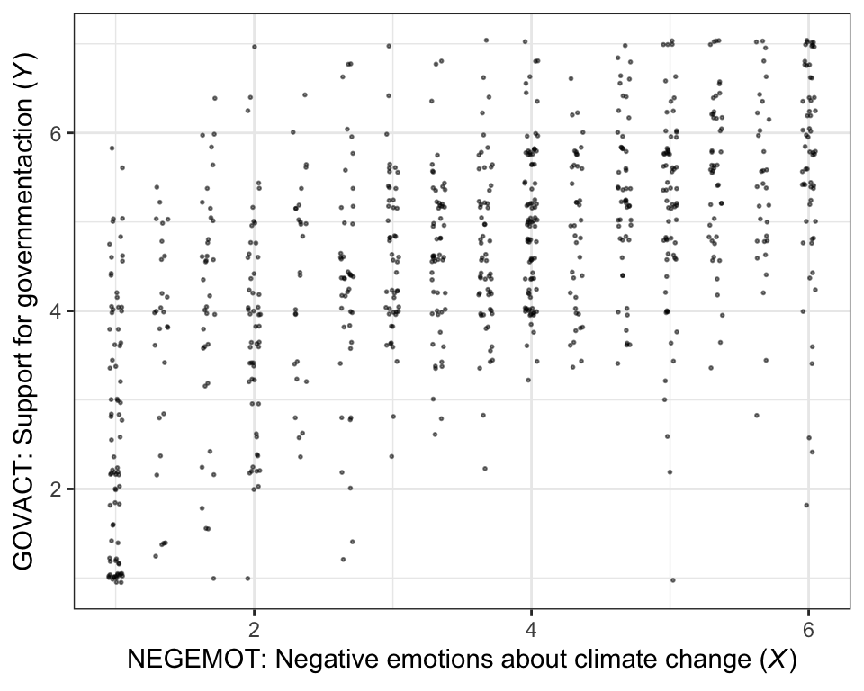
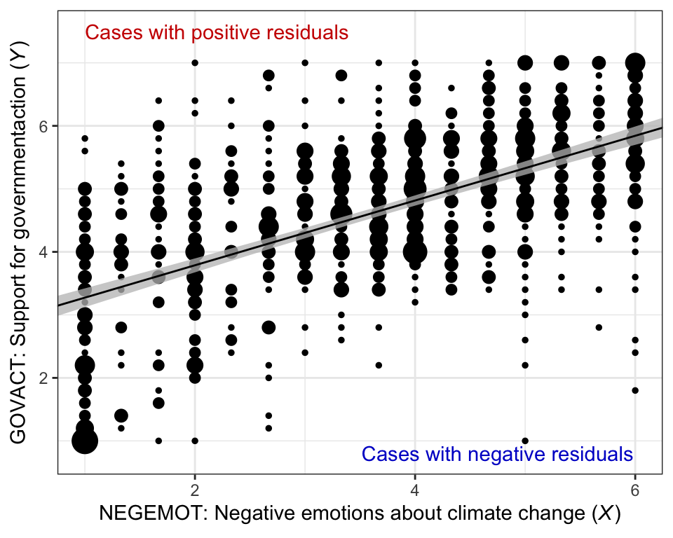
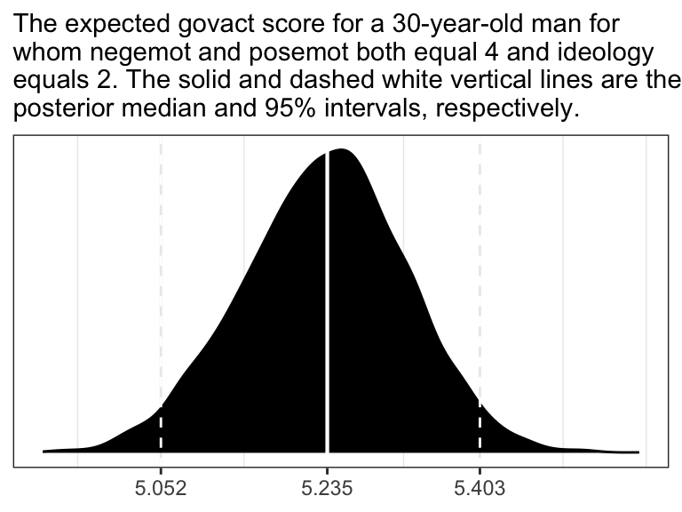
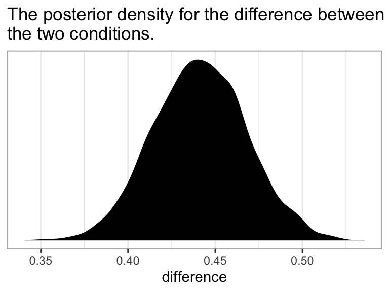
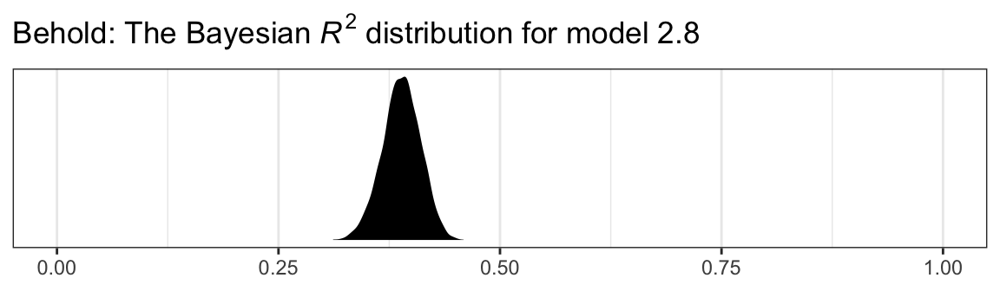
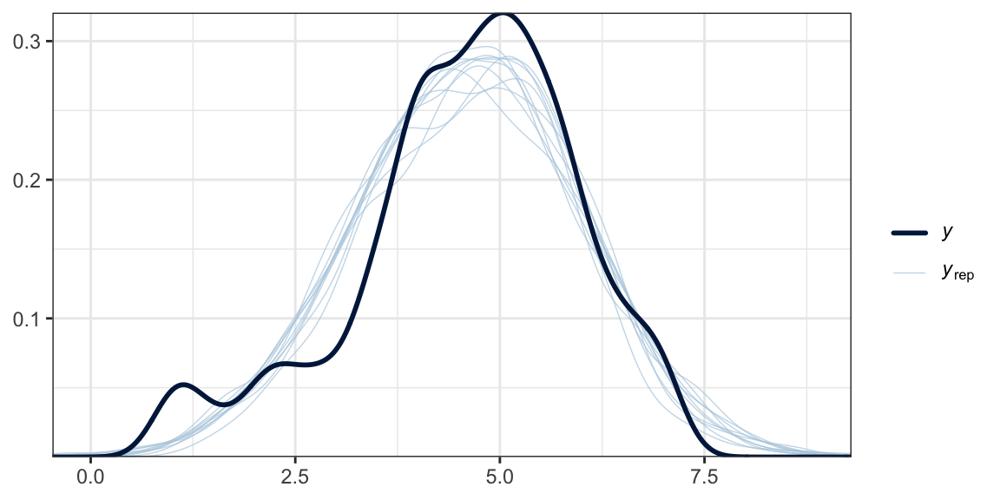
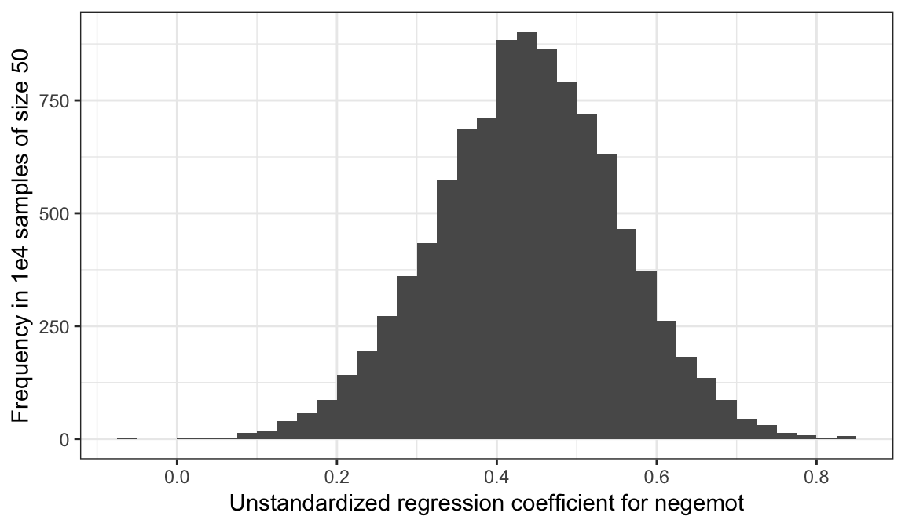
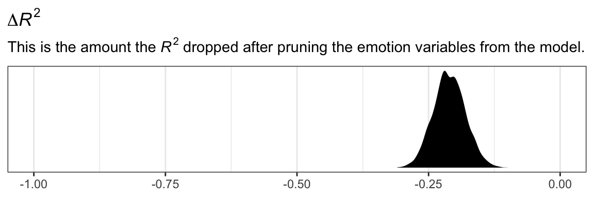
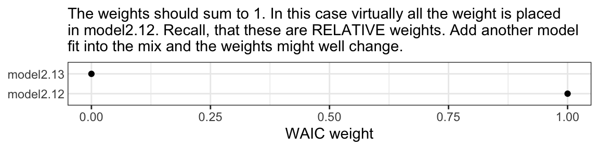

Linear regression is the foundation of most of the methods [Hayes described in his] book, so a solid understanding of the fundamentals of linear regression is essential. I assume that most readers have been exposed to linear regression in some form before discovering this book, and so some of the material will be review. Even so, I encourage everyone to read this chapter. (Hayes, 2018, p. 30)
Since we’re adding Bayes and the tidyverse into the mix, walking through this chapter will be double important, for us.
2.1 Correlation and prediction
Here we load a couple necessary packages, load the data, and take a peek.
If you are new to tidyverse-style syntax, possibly the oddest component is the pipe (i.e., %>%). I’m not going to explain the %>% in this project, but you might learn more about in this brief clip, starting around minute 21:25 in this talk by Wickham, or in Section 5.6.1 from Grolemund & Wickham (2017). Really, all of Chapter 5 of R4DS is great for new R and new tidyverse users, and Chapter 3 is a nice introduction to plotting with ggplot2.
Here is our version of Figure 2.1.
glbwarm %>%group_by(negemot, govact) %>%count() %>%ggplot(aes(x = negemot, y = govact, size = n)) +geom_point(show.legend = F) +labs(x =expression(paste("NEGEMOT: Negative emotions about climate change (", italic("X"), ")")),y =expression(paste("GOVACT: Support for governmentaction (", italic("Y"), ")"))) +theme_bw()
glbwarm %>%ggplot(aes(x = negemot, y = govact)) +geom_jitter(height =0.05, width =0.05, alpha =1/2, size =1/3) +labs(x =expression(paste("NEGEMOT: Negative emotions about climate change (", italic("X"), ")")),y =expression(paste("GOVACT: Support for governmentaction (", italic("Y"), ")"))) +theme_bw()

The cor() function is a simple way to compute a Pearson’s correlation coefficient.
cor(glbwarm$negemot, glbwarm$govact)
[1] 0.5777458
If you want more plentiful output, the cor.test() function returns a \(t\)-value, the degrees of freedom, the corresponding \(p\)-value and the 95% confidence intervals, in addition to the Pearson’s correlation coefficient.
cor.test(glbwarm$negemot, glbwarm$govact)
Pearson's product-moment correlation
data: glbwarm$negemot and glbwarm$govact
t = 20.183, df = 813, p-value < 2.2e-16
alternative hypothesis: true correlation is not equal to 0
95 percent confidence interval:
0.5301050 0.6217505
sample estimates:
cor
0.5777458
We’ll start simple and just use the default priors and settings, but with the addition of parallel sampling via cores = 4 and telling brms to save our output as an external file with the file argument.
We can examine a summary of the output with the print() function.
print(model2.1)
Family: MV(gaussian, gaussian)
Links: mu = identity
mu = identity
Formula: negemot ~ 1
govact ~ 1
Data: glbwarm (Number of observations: 815)
Draws: 4 chains, each with iter = 2000; warmup = 1000; thin = 1;
total post-warmup draws = 4000
Regression Coefficients:
Estimate Est.Error l-95% CI u-95% CI Rhat Bulk_ESS Tail_ESS
negemot_Intercept 3.56 0.05 3.45 3.66 1.00 3648 2717
govact_Intercept 4.59 0.05 4.49 4.68 1.00 3629 2808
Further Distributional Parameters:
Estimate Est.Error l-95% CI u-95% CI Rhat Bulk_ESS Tail_ESS
sigma_negemot 1.53 0.04 1.46 1.61 1.00 3670 3013
sigma_govact 1.36 0.03 1.30 1.43 1.00 3560 2984
Residual Correlations:
Estimate Est.Error l-95% CI u-95% CI Rhat Bulk_ESS Tail_ESS
rescor(negemot,govact) 0.58 0.02 0.53 0.62 1.00 3483 2950
Draws were sampled using sampling(NUTS). For each parameter, Bulk_ESS
and Tail_ESS are effective sample size measures, and Rhat is the potential
scale reduction factor on split chains (at convergence, Rhat = 1).
In regression models, we typically use predictor variables to explain variation in our criterion variables. It’s pretty much never the case that our predictors explain all the variation. The variation that’s left over is often called residual variation, residual variance, residuals, error, or even \(\epsilon\). Throughout the text, Hayes typically referred to it as \(e\).
More formally, when we use likelihood-based estimators, such as maximum likelihood (popular with multilevel modeling and structural equation modeling) or Bayesian estimators, we express the models for our criterion variables in terms of likelihood functions. Probably the most common likelihood function, and the one consistent with the models in Hayes’s text, is the Gaussian likelihood. With that likelihood we say our criterion variable \(y_i\) is normally distributed with a mean \(\mu\) and standard deviation \(\sigma\). We might express that formally as
where \(\sim\) stands for “is distributed as” and \(i\) indexes the \(i\)th row in the data. When we add predictors to the model, they are typically used to model the mean \(\mu\). Thus, in the case there we have a sole predictor \(x_i\) which varies across participants, we’d expand our model formula to
where \(\beta_0\) is the intercept and \(\beta_1\) is the slope for predictor \(x\), which varies across cases. In this formulation, \(\sigma\) is the standard deviation after accounting for the systemic variation explained by \(x_i\). That is, it’s the residual variance (i.e., \(\epsilon\)), but in a standard-deviation metric. Why in a standard deviation metric?, you ask. There are technical reasons why brms expresses it as a standard deviation which I’m not going to go into, here. Just beware that whereas many frequentist software packages express the residual variation in a variance metric, it’s expressed in a standard-deviation metric in brms. Just go with it and move on.
Within the brms framework, \(\sigma\) of the Gaussian likelihood is considered a “family-specific” parameter. As it turns out, there are many other fine likelihood functions in addition to the Gaussian and not all of them have a \(\sigma\) parameter. For example, there is no \(\sigma\) for the Poisson distribution,1 which is popular likelihood function for count variables. Because Bürkner made the brms package capable of a variety of likelihood functions, it behooved him to give this section of the output a generic name.
When you have a regression model with multiple Gaussian criterion variables, those variables will typically have some degree of covariation. It’s often termed residual covariance, particularly within the structural equation modeling paradigm.2 But when you have an intercept-only regression model with multiple variables, that residual covariance is just a covariance. And when you express those variation parameters in terms of standard deviations \(\sigma\), their covariance is expressed as a correlation \(\rho\). Since our multivariate model is of two variables, we have one \(\rho\) parameter for the \(\sigma\)’s, rescor(negemot,govact), which is our Bayesian analogue to the Pearson’s correlation.
To learn more about the multivariate syntax in brms, check out Bürkner’s (2022c) vignette, Estimating multivariate models with brms, or execute vignette("brms_multivariate"). Or just hold your horses until we get into mediation. All of our mediation models will use one version of the multivariate syntax or another.
But to clarify the output, above:
‘Estimate’ = the posterior mean, analogous to the frequentist point estimate,
‘Est.Error’ = the posterior \(\textit{SD}\), analogous to the frequentist standard error,
‘l-95% CI’ = the lower-level of the percentile-based 95% Bayesian credible interval, and
‘u-95% CI’ = the upper-level of the same.
2.2 The simple linear regression model
Here is how one might get the simple OLS coefficients in base R with the lm() function.
That also yields the log posterior, lp__, which you can learn more about in this section of the (2023) vignette by the Stan Development Team, RStan: the R interface to Stan or this brief blog post by Xulong Wang. We won’t focus on the lp__ directly in this project. But its influence will be lurking in the shadows.
The output also contains a row for lprior. This is the log of the joint prior and is a new addition to the output based on brms version 2.17.0. It is related to functionality from the up-and-coming priorsense package(Kallioinen et al., 2022), which is based on new work, such as Kallioinen et al. (2021). Though you’ll see it pop up in our output from time to time, the lprior will also be outside of our focus in this project.
But anyways, the Q2.5 and Q97.5, are the lower- and upper-levels of the 95% credible intervals. The Q prefix stands for quantile (see this thread). In this case, these are a renamed version of the l-95% CI and u-95% CI columns from our summary() output.
To make a quick plot of the regression line, one can use the convenient brms::conditional_effects() function.
It’s also useful to be able to work with the output of a brms model directly. For our first step, we’ll put our posterior draws into a data frame with the as_draws_df() function.
Next, we’ll use the fitted() function to compute model-implied summaries for the expected govact value, given particular predictor values. Our first model only has negemot as a predictor, and we’ll ask for the expected govact values for negemot ranging from 0 to 7.
The first two columns should look familiar to the output from summary(model2.3), above. The next two columns, Q2.5 and Q97.5, are the lower- and upper-levels of the 95% credible intervals, like we got from posterior_summary(). The final column is the result of the bind_cols(nd) code.
Here’s our bespoke version of Figure 2.4.
glbwarm %>%group_by(negemot, govact) %>%count() %>%ggplot(aes(x = negemot)) +geom_point(aes(y = govact, size = n),show.legend = F) +geom_ribbon(data = f,aes(ymin = Q2.5, ymax = Q97.5),fill ="grey75", alpha =3/4) +geom_line(data = f,aes(y = Estimate)) +annotate("text", x =2.2, y =7.5, label ="Cases with positive residuals", color ="red3") +annotate("text", x =4.75, y =0.8, label ="Cases with negative residuals", color ="blue3") +labs(x =expression("NEGEMOT: Negative emotions about climate change ("*italic("X")*")"),y =expression("GOVACT: Support for governmentaction ("*italic("Y")*")")) +coord_cartesian(xlim =range(glbwarm$negemot)) +theme_bw()

Note how that figure is a combination of the original glbwarm data and our f output.
2.2.1 Interpretation of the constant and regression coefficient
“The regression constant is conceptually equivalent to the \(Y\)-intercept in the equation for a line. It quantifies the estimated value of \(Y\) when \(X = 0\)” (p. 39).
2.2.2 The standardized regression model
Thus far, the interpretation of the regression coefficients in a regression model has been couched in unstandardized or raw metric form. Many regression routines will also produce a version of the model in standardized form. The standardized regression model is what results when all variables are first standardized prior to estimation of the model by expressing each measurement in units of standard deviations from the sample mean. (p. 40, emphasis in the original)
brms will not produce standardized solutions on the fly. To get them, you will have to manually standardize the variables before entering them into the model.
2.2.3 Simple linear regression with a dichotomous antecedent variable
In the glbwarm data, sex is a dichotomous variable.
Family: gaussian
Links: mu = identity
Formula: govact ~ 1 + sex
Data: glbwarm (Number of observations: 815)
Draws: 4 chains, each with iter = 2000; warmup = 1000; thin = 1;
total post-warmup draws = 4000
Regression Coefficients:
Estimate Est.Error l-95% CI u-95% CI Rhat Bulk_ESS Tail_ESS
Intercept 4.72 0.06 4.59 4.84 1.00 3908 2878
sex -0.27 0.09 -0.45 -0.08 1.00 3660 2827
Further Distributional Parameters:
Estimate Est.Error l-95% CI u-95% CI Rhat Bulk_ESS Tail_ESS
sigma 1.36 0.03 1.29 1.43 1.00 4111 3220
Draws were sampled using sampling(NUTS). For each parameter, Bulk_ESS
and Tail_ESS are effective sample size measures, and Rhat is the potential
scale reduction factor on split chains (at convergence, Rhat = 1).
Our model summary is very close to that in the text. If you just wanted the coefficients, you might use the fixef() function.
Though not necessary, we used the round() function to reduce the number of significant digits in the output. You can get a little more information with the posterior_summary() function.
But since Bayesian estimation yields an entire posterior distribution, you can visualize that distribution in any number of ways. Because we’ll be using ggplot2, we’ll need to put the posterior draws into a data frame before plotting.
As Hayes discussed on page 42, you can also get a sense of the model estimates for women and men with a little addition. Here we continue to use the round() function to simplify the output.
# for womenround(fixef(model2.4)[1, ], digits =2)
Estimate Est.Error Q2.5 Q97.5
4.72 0.06 4.59 4.84
# for men (just the posterior mean)round(fixef(model2.4)[1, 1] +fixef(model2.4)[2, 1], digits =2)
[1] 4.45
Hayes then considered that
although the model will always generate the group means, the regression coefficient and regression constant will depend on how the two groups are coded. For instance, suppose females were coded \(X = −1\) and males were coded \(X = 1\). (p. 42)
To follow along, we’ll first recode sex, saving it as sex_recode.
They match up well with the results in the middle of page 42. Now the Intercept in the output, what Hayes called \(i_Y\) is the unweighted mean of the means, \(\big (\overline Y_\text{male} + \overline Y_\text{female} \big ) \big / 2\), and the coefficient sex_recode (i.e., what Hayes called \(b\)) is one half the difference between those means. Here’s how to work with the posterior draws from this model to reproduce the group mean estimates.
You’ll see it looks just like the plot from above.
2.2.3.1 A caution about the standardized regression coefficient
The standardized regression coefficient is a function of both the mean difference and the distribution of the cases across the groups. This is an undesirable property of \(\tilde b\) when \(X\) is dichotomous. I recommend that the standardized regression coefficient for a dichotomous antecedent variable not be interpreted or reported.
If you desire an index of a mean difference in standard deviation units, I recommend standardizing \(Y\) but not the dichotomous \(X\) and then interpreting the unstandardized regression coefficient in a model estimating \(Z_Y\) from \(X\). In such a model, \(b\) is a partially standardized regression coefficient. (pp. 43–44, emphasis in the original)
Here’s how to fit the partially-standardized model, first with lm().
# standardize the Yglbwarm <- glbwarm %>%mutate(govact_z = (govact -mean(govact)) /sd(govact))# fit the modellm(data = glbwarm, govact_z ~1+ sex) %>%# summarizesummary()
Call:
lm(formula = govact_z ~ 1 + sex, data = glbwarm)
Residuals:
Min 1Q Median 3Q Max
-2.7329 -0.5278 0.1104 0.6985 1.8746
Coefficients:
Estimate Std. Error t value Pr(>|t|)
(Intercept) 0.09629 0.04876 1.975 0.04865 *
sex -0.19717 0.06978 -2.826 0.00483 **
---
Signif. codes: 0 '***' 0.001 '**' 0.01 '*' 0.05 '.' 0.1 ' ' 1
Residual standard error: 0.9957 on 813 degrees of freedom
Multiple R-squared: 0.009726, Adjusted R-squared: 0.008508
F-statistic: 7.985 on 1 and 813 DF, p-value: 0.004833
Now we’ll fit the model as Bayesians with brms::brm().
The constant \(i_Y\) is the mean standardized \(Y\) for females, and \(b\) is the mean difference between males and females in standard deviations of \(Y\). So men are estimated to differ from women by 0.197 standard deviations in their support for government action. The negative sign for \(b\) means males are lower than females, on average, in their support. (p. 44)
The parameter summaries from our Bayesian model was the same as the OLS summaries up to two decimal places. This will often be the case. One is not more correct. They are the results of using different procedures.
2.2.4 A note on symbolic representations
This section is worthy of repeating in full.
A brief digression is in order at this point. It is important when reporting the results of an analysis to define the symbols you use unless there is a strong convention, for a failure to do so can invite confusion. Different uses of \(b\) and \(\beta\) in regression analysis are an important case in point. There is much inconsistency in the substantive and methodology literature as to how regression coefficients are symbolized in unstandardized versus standardized form. Some use \(b\) or \(B\) to refer to the unstandardized regression coefficient and \(\beta\) to refer to the standardized regression coefficient. Others, rather than using \(\beta\), spell it out by referencing “beta weights” or just talk about the “betas.” Some use \(\beta\) to refer to a population regression coefficient, to distinguish it from a sample estimate, others use \(\beta\) as the unstandardized regression weight, and there are still others who use \(\hat \beta\) to refer to a sample unstandardized regression coefficient and leave the hat off for its corresponding population or “true” value. In this book, I use \(\tilde \beta\) for the standardized regression weight.
Ultimately, the symbols we use are for the most part arbitrary. We can use any symbols we want. My point is that you should not assume others will know what symbols you use mean, for your familiar symbols to represent certain concepts may not be understood as representing those concepts by all. The same applies to terms such as “beta coefficient” or other verbalizations of symbols. Best to define your symbols in advance, or otherwise let your reader know what your symbols mean when used in text and tables. This will help others better understand and interpret your work. (p. 44)
2.3 Alternative explanations for association
That “correlation does not imply causation” is etched into the brains of all scientists. If variables \(X\) and \(Y\) are correlated, that doesn’t mean that \(X\) causes \(Y\) or that \(Y\) causes \(X\). The ability to infer cause–effect is not even a statistical matter in the end. Rather, it is the design of one’s study, the data collection procedures one employs, and theoretical plausibility that most directly influence whether a cause–effect claim can be made and with what degree of confidence, not the size or sign of a statistical index of association. (p. 45)
On page 46, Hayes reported a couple correlations. Here’s how to get them from base R.
cor(glbwarm$sex, glbwarm$negemot)
[1] -0.1173564
cor(glbwarm$sex, glbwarm$govact)
[1] -0.09861854
Again, if we wanted to get full Bayesian estimates, we’d fit an intercept-only multivariate model.
Family: MV(gaussian, gaussian, gaussian)
Links: mu = identity
mu = identity
mu = identity
Formula: negemot ~ 1
govact ~ 1
sex ~ 1
Data: glbwarm (Number of observations: 815)
Draws: 4 chains, each with iter = 2000; warmup = 1000; thin = 1;
total post-warmup draws = 4000
Regression Coefficients:
Estimate Est.Error l-95% CI u-95% CI Rhat Bulk_ESS Tail_ESS
negemot_Intercept 3.557 0.053 3.455 3.661 1.001 5537 3509
govact_Intercept 4.586 0.047 4.492 4.677 1.000 5220 3153
sex_Intercept 0.488 0.018 0.453 0.522 1.001 7290 3067
Further Distributional Parameters:
Estimate Est.Error l-95% CI u-95% CI Rhat Bulk_ESS Tail_ESS
sigma_negemot 1.531 0.038 1.458 1.608 1.000 4844 3278
sigma_govact 1.363 0.034 1.299 1.430 1.000 4697 3378
sigma_sex 0.501 0.013 0.478 0.526 1.001 6736 3299
Residual Correlations:
Estimate Est.Error l-95% CI u-95% CI Rhat Bulk_ESS Tail_ESS
rescor(negemot,govact) 0.576 0.023 0.530 0.619 1.000 5219 3568
rescor(negemot,sex) -0.117 0.034 -0.185 -0.049 1.002 6515 2818
rescor(govact,sex) -0.098 0.035 -0.166 -0.031 1.001 7430 3093
Draws were sampled using sampling(NUTS). For each parameter, Bulk_ESS
and Tail_ESS are effective sample size measures, and Rhat is the potential
scale reduction factor on split chains (at convergence, Rhat = 1).
For our purposes, the action is in the ‘rescor(\(i\), \(j\))’ portions of the ‘Family Specific Parameters’ section.
Anyway, if you wanted to get all the Pearson’s correlations among the glbwarm variables, rather than piecewise cor() approach, you could use the lowerCor() function from the psych package(Revelle, 2022).
The simple linear regression model is easily extended to the estimation of a consequent variable using more than one antecedent variable. Including more than one antecedent in a regression model allows you to simultaneously investigate the role of multiple influences on a consequent variable. An additional and important benefit of the multiple regression model is that it provides various measures of partial association that quantify the component of the association between an antecedent and a consequent that is unique to that antecedent relative to other antecedent variables in the model. (p. 48, emphasis in the original)
Using Hayes’ notation, the linear model we’re about to fit follows the basic equation
For us, there’s technically more involved because our Bayesian paradigm includes priors, which we’re not focusing on at the moment. Anyway, there’s nothing particularly special about jumping from univariable to multivariable models with brms. You just keep tacking on predictors with the + operator.
model2.8<-brm(data = glbwarm, family = gaussian, govact ~1+ negemot + posemot + ideology + sex + age,cores =4,file ="fits/model02.08")
print(model2.8)
Family: gaussian
Links: mu = identity
Formula: govact ~ 1 + negemot + posemot + ideology + sex + age
Data: glbwarm (Number of observations: 815)
Draws: 4 chains, each with iter = 2000; warmup = 1000; thin = 1;
total post-warmup draws = 4000
Regression Coefficients:
Estimate Est.Error l-95% CI u-95% CI Rhat Bulk_ESS Tail_ESS
Intercept 4.06 0.21 3.65 4.48 1.00 5432 3496
negemot 0.44 0.03 0.39 0.49 1.00 5249 3038
posemot -0.03 0.03 -0.08 0.03 1.00 6705 2904
ideology -0.22 0.03 -0.27 -0.16 1.00 4771 2782
sex -0.01 0.08 -0.17 0.15 1.00 6269 3138
age -0.00 0.00 -0.01 0.00 1.00 5663 3547
Further Distributional Parameters:
Estimate Est.Error l-95% CI u-95% CI Rhat Bulk_ESS Tail_ESS
sigma 1.07 0.03 1.02 1.12 1.00 6158 3033
Draws were sampled using sampling(NUTS). For each parameter, Bulk_ESS
and Tail_ESS are effective sample size measures, and Rhat is the potential
scale reduction factor on split chains (at convergence, Rhat = 1).
Following Hayes on pages 50 and 51, here is the posterior mean (i.e., what you might call the Bayesian point estimate) for someone with
If you want a full expression of the model uncertainty in terms of the shape of the posterior distribution and the 95% intervals, you’ll might use as_draws_df() and do a little data processing.
draws <-as_draws_df(model2.8)draws <- draws %>%mutate(our_posterior = b_Intercept + b_negemot *4+ b_posemot *4+ b_ideology *2+ b_sex *1+ b_age *30)# this intermediary step will make it easier to specify the break points and their labels for the x-axis post_summary <-quantile(draws$our_posterior, probs =c(0.025, 0.5, 0.975)) %>%as_tibble() %>%mutate(labels = value %>%round(digits =3) %>%as.character())# plot!ggplot(data = draws,aes(x = our_posterior)) +geom_density(fill ="black") +geom_vline(xintercept = post_summary$value,size =c(0.5, 0.75, 0.5), linetype =c(2, 1, 2), color ="white") +scale_x_continuous(NULL,breaks = post_summary$value,labels = post_summary$labels) +scale_y_continuous(NULL, breaks =NULL) +labs(subtitle ="The expected govact score for a 30-year-old man for\nwhom negemot and posemot both equal 4 and ideology\nequals 2. The solid and dashed white vertical lines are the\nposterior median and 95% intervals, respectively.") +theme_bw()

In the text, Hayes showed that individuals based on these two profiles would be expected to differ by 0.441 (i.e., \(5.244 - 4.803 = 0.441\)). That’s fine if you’re only working with OLS point estimates. But a proper Bayesian approach would express the difference in terms of an entire poster distribution, or at least a point estimate accompanied by some sort of intervals. Here we’ll just work with the posterior to create a difference distribution. You could do that with a little deft as_draws_df() wrangling. Here we’ll employ fitted().
nd <-tibble(negemot =c(3, 4),posemot =4,ideology =2,sex =1,age =30)fitted(model2.8, newdata = nd,summary = F) %>%data.frame() %>%set_names(str_c("condition_", letters[1:2])) %>%mutate(difference = condition_b - condition_a) %>%ggplot(aes(x = difference)) +geom_density(fill ="black", color ="transparent") +scale_y_continuous(NULL, breaks =NULL) +ggtitle("The posterior density for the difference between\nthe two conditions.") +theme_bw()

2.4.1 The standardized regression model
As brms doesn’t automatically give us the standardized coefficients the way OLS output often does, we’ll have to be proactive. One solution is just to standardized the data themselves and then re-fit the model with those standardized variables. That leads us to the issue of how one standardized variables to begin with. Recall that standardizing entails subtracting the mean of a variable from that variable and then dividing that value by the standard deviation. We don’t want to do that by hand. So one handy way is to make a custom function to do that work for us.
standardize <-function(x) { (x -mean(x)) /sd(x)}
To learn more about making custom functions in R, check our Chapter 19 of R4DS.
Here we’ll employ our custom standardize() function to make standardized versions of our variables.
Our coefficients match up nicely with those on page 52 in the text. Just as with Hayes’s OLS estimates, we should not attempt to interpret the standardized sex_z coefficient from our Bayesian model.
Here’s how we’d fit a partially-standardized model–a model in which all variables except for sex are standardized.
Notice our use of the update() function. If you want to hastily fit a brms model of the same basic form of a prior model, you can just update some of the parameters of that original fit. In this case, all we did was swap out one of the predictors. To accommodate that change, we used the newdata argument so the model had access to the new variable and then we fed in the new formula.
Anyway, here are the coefficient summaries, including the Intercept, for the partially-standardized model.
As Hayes wrote, now sex = -0.008 has a sensible interpretation. “We can say that men and women differ by [-0.008] standard deviations in their support for government action when all other variables in the model are held constant (p. 53).”
On page 54, Hayes gave us the equation to transform unstandardized coefficients to standardized ones:
# here's the coefficient for `negemot` from the standardized model, `model2.9`fixef(model2.9)["negemot_z", "Estimate"]
[1] 0.4945391
# here's the coefficient for `negemot` from the unstandardized model, `model2.8`fixef(model2.8)["negemot", "Estimate"]
[1] 0.4412645
# and here we use Hayes' formula to standardize the unstandardized coefficientfixef(model2.8)["negemot", "Estimate"] * (sd(glbwarm$negemot) /sd(glbwarm$govact))
[1] 0.4957546
Looks like we got it within rounding error–pretty good! However, that was just the posterior mean, the Bayesian point estimate. If we want to more fully express the uncertainty around the mean–and we do–, we’ll need to work with the posterior draws.
# the posterior draws from the unstandardized modelas_draws_df(model2.8) %>%# using Hayes' formula to standardize `b_negemot`mutate(`hand-made b_negemot_z`= b_negemot * (sd(glbwarm$negemot) /sd(glbwarm$govact))) %>%# tacking on the `b_negemot_z` column from the standardized `model2.9` models posterior drawsbind_cols(as_draws_df(model2.9) %>%select(b_negemot_z)) %>%# converting the data to the long format and grouping by `name`pivot_longer(c(`hand-made b_negemot_z`, b_negemot_z)) %>%group_by(name) %>%# here we summarize the resultssummarise(mean =mean(value),sd =sd(value),ll =quantile(value, probs =0.025),ul =quantile(value, probs =0.975)) %>%mutate_if(is.double, round, digits =3)
# A tibble: 2 × 5
name mean sd ll ul
<chr> <dbl> <dbl> <dbl> <dbl>
1 b_negemot_z 0.495 0.03 0.436 0.552
2 hand-made b_negemot_z 0.496 0.03 0.438 0.556
Our summary confirms that we can apply Hayes’s formula to a as_draws_df() column in order to get fuller summary statistics for a hand-converted standardized coefficient. This would be in full compliance with, say, APA recommendations to include 95% intervals with all effect sizes–the standardized regression coefficient being the effect size, here.
2.5 Measures of model fit
In the Bayesian world, we don’t tend to appeal to the \(\textit{SS}_{residual}\), the \(\textit{MS}_{residual}\), or the standard error of estimate. We do sometimes, however, appeal to the \(R^2\). I’m not going to go into the technical details here, but you should be aware that the Bayesian \(R^2\) is not calculated the same as the OLS \(R^2\). If you want to dive in, check out the (2019) paper by Gelman, Goodrich, Gabry, and Vehtari, R-squared for Bayesian regression models. Here’s how to get it with brms.
It even comes with 95% intervals, which will make the editors at APA journals happy. If you want to go beyond summary statistics and take a look at the full posterior, just set summary = F and data wrangle and plot as usual.
bayes_R2(model2.8, summary = F) %>%data.frame() %>%ggplot(aes(x = R2)) +geom_density(fill ="black", color ="transparent") +scale_y_continuous(NULL, breaks =NULL) +labs(title =expression(paste("Behold: The Bayesian ", italic("R")^{2}, " distribution for model 2.8")),x =NULL) +coord_cartesian(xlim =0:1) +theme_bw()

Another way we examine model fit is with graphical posterior predictive checks. Posterior predictive checking is a very general approach, which you might learn more about from Gabry et al. (2019) or with a few keyword searches in on Gelman’s blog. One basic way is to use the model in order to simulate data and then compare those data with the original data–the basic idea being that good fitting models should produce data similar to the original data.
Recall how we’ve used fitted() to make regression lines and expected values? We’ll, now we’ll use predict() to simulate data based on our models.
Overall, the simulations aren’t bad. But in all three govact tends to veer above 7.5, which is where the original data appear to be bounded. But otherwise the overall shape is pretty close, at least with respect to negemot.
There’s nothing special about three simulations. Three is just more than one and gives you a sense of the variance across simulations. Also, we only examined the model fit with respect to negemot. Since there are other variables in the model, we might also assess the model based on them.
Another method is with the brms::pp_check() function, which allows users to access a variety of convenience functions from the bayesplot package(Gabry et al., 2019; Gabry & Mahr, 2022). Here we’ll use the default settings and just tack on theme_bw() for aesthetics.
set.seed(2)pp_check(model2.8) +theme_bw()

What we did was simulate 10 data sets worth of govact values, plot their densities (i.e., the thin blue lines) and compare them with the density of the original govact values. What we want is for the thin blue lines to largely align with the thick blue line. Though not perfect, the simulations from our model2.8 did a pretty okay job of reproducing the original govact distribution. For more ideas on this method, see the brms reference manual(Bürkner, 2022a) and Gabry’s (2019) vignette, Graphical posterior predictive checks using the bayesplot package.
2.6 Statistical inference
Here’s a tidyverse way to do Hayes’ simulation from page 57. We’re just using OLS regression with the lm() function. You could do this with Bayesian HMC estimation, but man would it take a while. For our first step, we’ll define two custom functions.
# this first one will use the `slice_sample()` function to randomly sample from `glbwarm`make_sample <-function(i) {set.seed(i)slice_sample(glbwarm, n =50, replace = F)}# this second function will fit our model, the same one from `model2.8`, to each of our subsamplesglbwarm_model <-function(df) {lm(govact ~1+ negemot + posemot + ideology + sex + age, data = df)}
Now we’ll run the simulation, wrangle the output, and plot in one fell swoop.
# we need an iteration index, which will double as the values we set our seed with in our `make_sample()` functiontibble(iter =1:1e4) %>%group_by(iter) %>%# inserting our subsamplesmutate(sample =map(iter, make_sample)) %>%# fitting our modelsmutate(model =map(sample, glbwarm_model)) %>%# taking those model results and tidying them with the broom packagemutate(broom =map(model, broom::tidy)) %>%# unnesting allows us to access our model resultsunnest(broom) %>%# we're only going to focus on the estimates for `negemot`filter(term =="negemot") %>%# here it is, Figure 2.7ggplot(aes(x = estimate)) +geom_histogram(binwidth =0.025, boundary =0) +labs(x ="Unstandardized regression coefficient for negemot",y ="Frequency in 1e4 samples of size 50") +theme_bw()

To learn more about this approach to simulations, see Section 25.2.1 in R4DS.
2.6.1 Testing a null hypothesis
As Bayesians, we don’t need to wed ourselves to the null hypothesis. We’re not interested in the probability of the data given the null hypothesis. Bayes’ rule,
gives us the probability of the model parameters, given the data. Though I acknowledge different researchers might set out to ask different things of their data, I propose we’re generally more interested in determining the most probable parameter values than we are the probabilities tested within the NHST paradigm.
as_draws_df(model2.8) %>%ggplot(aes(x = b_negemot)) +geom_density(fill ="black", color ="transparent") +geom_vline(xintercept =posterior_interval(model2.8)["b_negemot", ],color ="white", linetype =2) +scale_x_continuous(breaks =posterior_interval(model2.8)["b_negemot", ] %>%as.double(),labels =posterior_interval(model2.8)["b_negemot", ] %>%as.double() %>%round(digits =2) %>%as.character()) +scale_y_continuous(NULL, breaks =NULL) +labs(subtitle ="The most probable values for our b_negemot parameter are the ones around the peak\nof the density. For convenience, the dashed lines denote the 95% credible intervals.\nSure, you could ask yourself, 'Is zero within those intervals?' But with such rich output,\nthat seems like an impoverished question to ask.") +theme_bw()
Within the Bayesian paradigm, we don’t use 95% intervals based on the typical frequentist formula. With the brms package, we typically use percentile-based intervals. Take the 95% credible intervals for the negemot coefficient from model model2.8:
posterior_interval(model2.8)["b_negemot", ]
2.5% 97.5%
0.3900139 0.4949639
We can actually get those intervals with the simple use of the base Rquantile() function.
The consequence of this is that our Bayesian credible intervals aren’t necessarily symmetric, which is fine because the posterior distribution for a given parameter isn’t always symmetric. But not all Bayesian intervals are percentile based. John Kruschke, for example, often recommends highest posterior density intervals in his work. The brms package doesn’t have a convenience function for these, but you can compute them with help from the HDInterval package(Meredith & Kruschke, 2018).
Finally, because Bayesians aren’t bound to the NHST paradigm, we aren’t bound to 95% intervals, either. For example, in both his excellent (2020)text and as a default in its accompanying rethinking package, Richard McElreath often uses 89% intervals. Alternatively, Andrew Gelman has publicly advocated for 50% intervals. The most important thing is to express the uncertainty in the posterior in a clearly-specified way. If you’d like, say, 80% intervals in your model summary, you can insert a prob argument into either print() or summary().
print(model2.8, prob =0.8)
Family: gaussian
Links: mu = identity
Formula: govact ~ 1 + negemot + posemot + ideology + sex + age
Data: glbwarm (Number of observations: 815)
Draws: 4 chains, each with iter = 2000; warmup = 1000; thin = 1;
total post-warmup draws = 4000
Regression Coefficients:
Estimate Est.Error l-80% CI u-80% CI Rhat Bulk_ESS Tail_ESS
Intercept 4.06 0.21 3.80 4.33 1.00 5432 3496
negemot 0.44 0.03 0.41 0.48 1.00 5249 3038
posemot -0.03 0.03 -0.06 0.01 1.00 6705 2904
ideology -0.22 0.03 -0.25 -0.18 1.00 4771 2782
sex -0.01 0.08 -0.11 0.09 1.00 6269 3138
age -0.00 0.00 -0.00 0.00 1.00 5663 3547
Further Distributional Parameters:
Estimate Est.Error l-80% CI u-80% CI Rhat Bulk_ESS Tail_ESS
sigma 1.07 0.03 1.04 1.10 1.00 6158 3033
Draws were sampled using sampling(NUTS). For each parameter, Bulk_ESS
and Tail_ESS are effective sample size measures, and Rhat is the potential
scale reduction factor on split chains (at convergence, Rhat = 1).
Note how the names of two of our columns changed to ‘l-80% CI’ and ‘u-80% CI’.
You can specify custom percentile levels with posterior_summary():
So far it looks like our fuller model, model2.8, accounts for more variation in the data. If we wanted to look at their distributions, we’d set summary = F in the bayes_R2() function and convert the results to a data frame. Here we use bind_cols() to put the \(R^2\) results for both in the same tibble.
Yep, the \(R^2\) distribution for model2.8, the one including the emotion variables, is clearly larger than that for the more parsimonious model2.11. And it’d just take a little more data wrangling to get a formal \(R^2\) difference score.
r2 %>%mutate(difference = model2.11- model2.8) %>%ggplot(aes(x = difference)) +geom_density(fill ="black", color ="transparent") +scale_y_continuous(NULL, breaks =NULL) +coord_cartesian(xlim =-1:0) +labs(title =expression(paste(Delta, italic(R)^{2})),subtitle =expression(paste("This is the amount the ", italic(R)^{2}, " dropped after pruning the emotion variables from the model.")),x =NULL) +theme_bw()

The \(R^2\) approach is popular within the social sciences. But it has its limitations, the first of which is that it doesn’t correct for model complexity. The second is it’s not applicable to a range of models, such as those that do not use the Gaussian likelihood (e.g., logistic regression) or to multilevel models.
Happily, information criteria offer a more general framework. The AIC is the most popular information criteria among frequentists. Within the Bayesian world, we have the DIC, the WAIC, and the LOO. The DIC is quickly falling out of favor and is not immediately available with the brms package. However, we can use the WAIC and the LOO, both of which are computed in brms via the loo package(Vehtari et al., 2017; Vehtari et al., 2022; Yao et al., 2018).
With brms, you can compute the WAIC or LOO values and add them to your model fit object with the add_criterion() function.
Computed from 4000 by 815 log-likelihood matrix.
Estimate SE
elpd_loo -1214.1 22.7
p_loo 7.9 0.7
looic 2428.1 45.5
------
MCSE of elpd_loo is 0.0.
MCSE and ESS estimates assume MCMC draws (r_eff in [1.1, 1.8]).
All Pareto k estimates are good (k < 0.7).
See help('pareto-k-diagnostic') for details.
You get a wealth of output, more of which can be seen with str(model2.8$loo). For now, notice the “All Pareto k estimates are good (k < 0.5).” For technical details on Pareto \(k\) values, see Vehtari & Gabry (2020). In short, each case in the data gets its own \(k\) value and we like it when those \(k\)’s are low. The makers of the loo package get worried when those \(k\)’s exceed 0.7 and as a result you will get a warning message when they do. Happily, we have no such warning messages in this example.
If you want to work with the \(k\) values directly, you can extract them and place them into a data frame like so.
The pareto_k values can be used to examine cases that are overly-influential on the model parameters, something akin to a Cook’s \(D_i\). See, for example this discussion on stackoverflow.com in which several members of the Stan team weighed in. The issue is also discussed in Vehtari et al. (2017) and in this lecture by Aki Vehtari.
But anyway, we’re getting ahead of ourselves. Back to the LOO.
Like other information criteria, the LOO values aren’t of interest in and of themselves. However, the values of one model’s LOO relative to that of another is of great interest. We generally prefer models with lower information criteria. With compare_ic(), we can compute a formal difference score between multiple loo objects.
We also get a standard error. Here it looks like model2.8 was substantially better, in terms of LOO-values, than model2.11.
For more on the LOO, see the loo reference manual(Gabry, 2022), Vehtari and Gabry’s handy (2020)vignette, or the scholarly papers referenced therein. Also, McElreath discussed the LOO in the second (2020) version of his text, as well as in this lecture.
2.7 Multicategorical antecedent variables
“To include a multicategorical antecedent variable representing \(g\) groups in a regression model, it must be represented with \(g − 1\) variables using one of a variety of different group coding systems”. (p. 66) This isn’t strictly true, but we digress. Hayes went on…
One popular system for coding groups is indicator coding, also known as dummy coding. With indicator coding, \(g − 1\)indicator variables containing either a zero or one represent which of the \(g\) groups a case belongs in, and these indicator variables are used as antecedents in a regression model. To construct indicator codes, create \(g − 1\) variables \(D_i\) for each case set to 1 if the case is in group \(i\), otherwise set \(D_i\) to zero. (p. 66, emphasis in the original)
Before we get to that, we should examine our multicategorical antecedent variable, partyid. It’s coded 1 = Democrat 2 = Independent 3 = Republican. You can get a count of the cases within a give partyid like this.
glbwarm %>%count(partyid)
# A tibble: 3 × 2
partyid n
<dbl> <int>
1 1 359
2 2 192
3 3 264
There’s no need to compute an \(F\)-test on our \(R^2\). The posterior mean and its 95% intervals are well away from zero. But you could use your bayes_R2(model2.12, summary = F) plotting skills from above to more fully inspect the posterior, if you’d like.
We could also use information criteria. One method would be to compare the WAIC or LOO value of model2.12 with an intercept-only model. First, we’ll need to fit that model.
The WAIC comparison suggests model2.12, the one with the partyid dummies, is an improvement over the simple intercept-only model. Another way to compare the information criteria is with AIC-type weighting. The brms package offers a variety of weighting methods via the model_weights() function.
If you’re not a fan of scientific notation, you can put the results in a tibble and look at them on a plot.
mw %>%data.frame() %>%rownames_to_column() %>%set_names(c("model", "WAIC weight")) %>%ggplot(aes(x =`WAIC weight`, y = model)) +geom_point() +labs(subtitle ="The weights should sum to 1. In this case virtually all the weight is placed\nin model2.12. Recall, that these are RELATIVE weights. Add another model\nfit into the mix and the weights might well change.", y =NULL) +theme_bw() +theme(axis.ticks.y =element_blank())

You could, of course, do all this with the LOO.
2.8 Assumptions for interpretation and statistical inference
Regression is a handy tool to have in your statistical toolbox. Its utility as a “general data analytic system” (Cohen, 1968) will be apparent throughout this book. But it is a human invention that isn’t perfect, it can lead you astray if used indiscriminately, and it is founded on some assumptions that aren’t always realistic or likely to be met in the circumstances in which the method is applied. (p. 68)
2.8.1 Linearity
“When using OLS regression to model some consequent variable of interest \(Y\), you must be willing to assume that the relationship between the variables in the model are linear in nature, or at least approximately linear” (p. 69)
The brms package can also accommodate homoscedasticity with distributional modeling. In short, one simply models \(\sigma\) in addition to the mean, \(\mu\). See Bürkner’s handy (2022b) vignette, Estimating distributional models with brms on the topic.
Brilleman, S., Crowther, M., Moreno-Betancur, M., Buros Novik, J., & Wolfe, R. (2018). Joint longitudinal and time-to-event models via Stan.https://github.com/stan-dev/stancon_talks/
Bürkner, P.-C. (2017). brms: An R package for Bayesian multilevel models using Stan. Journal of Statistical Software, 80(1), 1–28. https://doi.org/10.18637/jss.v080.i01
Bürkner, P.-C. (2018). Advanced Bayesian multilevel modeling with the R package brms. The R Journal, 10(1), 395–411. https://doi.org/10.32614/RJ-2018-017
Gabry, J., Simpson, D., Vehtari, A., Betancourt, M., & Gelman, A. (2019). Visualization in Bayesian workflow. Journal of the Royal Statistical Society: Series A (Statistics in Society), 182(2), 389–402. https://doi.org/10.1111/rssa.12378
Gelman, A., Goodrich, B., Gabry, J., & Vehtari, A. (2019). R-squared for Bayesian regression models. The American Statistician, 73(3), 307–309. https://doi.org/10.1080/00031305.2018.1549100
Gelman, A., & Hill, J. (2006). Data analysis using regression and multilevel/hierarchical models. Cambridge University Press. https://doi.org/10.1017/CBO9780511790942
Grolemund, G., & Wickham, H. (2017). R for data science. O’Reilly. https://r4ds.had.co.nz
Merkle, E. C., Fitzsimmons, E., Uanhoro, J., & Goodrich, B. (2021). Efficient Bayesian structural equation modeling in Stan. Journal of Statistical Software, 100(6), 1–22. https://doi.org/10.18637/jss.v100.i06
Merkle, E. C., & Rosseel, Y. (2018). blavaan: Bayesian structural equation models via parameter expansion. Journal of Statistical Software, 85(4), 1–30. https://doi.org/10.18637/jss.v085.i04
Vehtari, A., Gabry, J., Magnusson, M., Yao, Y., & Gelman, A. (2022). loo: Efficient leave-one-out cross-validation and WAIC for bayesian models. https://CRAN.R-project.org/package=loo/
Vehtari, A., Gelman, A., & Gabry, J. (2017). Practical Bayesian model evaluation using leave-one-out cross-validation and WAIC. Statistics and Computing, 27(5), 1413–1432. https://doi.org/10.1007/s11222-016-9696-4
Yao, Y., Vehtari, A., Simpson, D., & Gelman, A. (2018). Using stacking to average Bayesian predictive distributions (with discussion). Bayesian Analysis, 13(3), 917–1007. https://doi.org/10.1214/17-BA1091
Comments